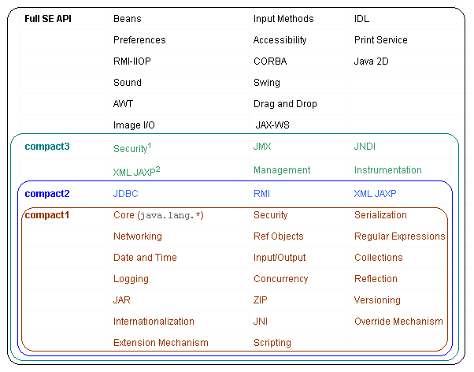
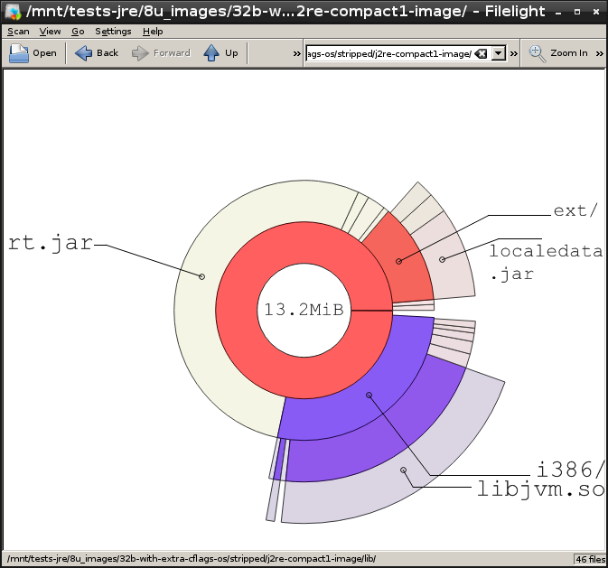

How to compile OpenJDK 8 for embedded devices
Thomas Lorblanchès
16/10/2015
|
Setup (Debian and derivatives)
$ sudo apt-get install mercurial (1)
$ hg clone http://hg.openjdk.java.net/jdk8u/jdk8u60 (2)
$ cd jdk8u60
$ bash ./get_source.sh (3)
$ sudo apt-get install openjdk8-jdk (4)
$ sudo apt-get build-dep openjdk-8 (5)OpenJDK uses Mercurial for its source repositories
Download root repository
Download sub-repositories ("forest")
Java 7 or 8 is required to compile OpenJDK 8
Installation of build dependencies
Compilation of OpenJDK 8
Configuration:
$ bash ./configure --with-jvm-variants=server \
--with-debug-level=release \
--disable-debug-symbols --disable-zip-debug-info \
--enable-unlimited-cryptoHelp on configuration options:
$ bash ./configure --helpCompilation:
$ make allInitial assessment: 98.3Mo

VM flavours
- Server
default VM, best performances, biggest size.
- Client
32bit VM optimised for client applications (startup time).
- Minimal
JEP-148, 32bit VM, minimum footprint, perf. degradation < 5%.
- Kernel
ancestor of Minimal (Java 6), Windows only, not maintained.
- Zero
VM without assembly code, interpreter only.
- Zero-Shark
Zero VM with JIT compiler based on LLVM.
Default sizes and performances of x86 VM
| VM | Configuration option--with-jvm-variants= | Size of libjvm.so | SPECjvm2008 score |
|---|---|---|---|
Server 64bits |
| 15.5Mo | 70.9 ops/m |
Server 32bits |
| 13.5Mo | 62.9 ops/m |
Client 32bits |
| 8.4Mo | 43.9 ops/m |
Minimal 32bits |
| 5.8Mo | 40.4 ops/m |
Zero 32 bits |
| 7.0Mo | 1.4 ops/m |
Shark 32 bits |
| 19.8Mo | 16.8 ops/m |
libjvm.so optimisation
Dynamic linking with C++ lib of the OS:
--with-stdc++lib=dynamicSaving: -102ko
Compilation optimised for size:
--with-extra-cflags=-OsSaving: -1.8Mo on libjvm.so (VM Minimal)
Stripping of binaries:
find . -exec strip --strip-unneeded {} \;Saving: -1Mo on libjvm.so (VM Minimal)
Summary of the size optimisations of libjvm.so
| VM | Default size of libjvm.so | "Optimised" size |
|---|---|---|
Server 64bits | 15.5Mo | 8.8Mo |
Server 32bits | 13.5Mo | 7.1Mo |
Client 32bits | 8.4Mo | 4.1Mo |
Minimal 32bits | 5.8Mo | 2.8Mo |
Zero 32 bits | 7.0Mo | 3.4Mo |
Shark 32 bits | 19.8Mo | 14.5Mo |
Security
 | Use of Debian hardening flags |
--with-extra-cflags='-Os -D_FORTIFY_SOURCE=2
-fstack-protector-strong'
--with-extra-ldflags='-Xlinker -z -Xlinker relro'
Cost: +139ko (VM Minimal) without any measurable performance impact |
What about ARM?
ARMv8 (64 bits) :
AArch64 port since March 2014
Repository: http://hg.openjdk.java.net/aarch64-port/jdk8
Merged inside jdk9 repository
ARMv6/7 (32 bits) :
Zero / Shark
Oracle Java SE Embedded 8 (proprietary license) : http://www.oracle.com/technetwork/java/embedded/embedded-se/
Optimisation of rt.jar: compact profiles
New in Java 8.
Compact profiles are sort of a poor man’s module system.
— Mark Reinhold

Generation of compact profiles
$ make profiles| Type of JRE | Size of rt.jar |
|---|---|
Full JRE | 61.7Mo |
Compact 3 | 30.5Mo |
Compact 2 | 24.8Mo |
Compact 1 | 13.9Mo |
Compression of rt.jar
By default, rt.jar is not compressed!
$ zipinfo images/j2re-compact1-image/lib/rt.jar
[...]
4689 files, 13858994 bytes uncompressed, 13858994 bytes compressed: 0.0%Compile with
COMPRESS_JARS=true:
$ make all COMPRESS_JARS=true
$ make profiles COMPRESS_JARS=true$ zipinfo images/j2re-compact1-image/lib/rt.jar
[...]
4689 files, 13858994 bytes uncompressed, 6574887 bytes compressed: 52.6%Compressed rt.jar sizes
| Type of JRE | Without compression | With compression |
|---|---|---|
Full JRE | 61.7Mo | 30.1Mo |
Compact 3 | 30.5Mo | 14.9Mo |
Compact 2 | 24.8Mo | 12.0Mo |
Compact 1 | 13.9Mo | 7.1Mo |
Drawback: class loading time / application startup time
Where are we now?
Minimal VM with compact 1 profile and compression.

The final bits
lib/ext (1.6Mo): optional packages
localedata.jar (1.1Mo): local data for java.text and java.util (43 languages!)
sunec.jar (35ko) + lib/{arch}/libsunec.so (180ko): elliptic curve crypto
sunjce_provider.jar (253ko) + lib/jce.jar (91ko) : (a)symmetric crypto (Impl+API)
sunpkcs11.jar (230ko) + lib/{arch}/libj2pkcs11.so (63ko): PKCS#11 (crypto tokens)
lib/jsse.jar (303ko): Java Secure Socket Extension (TLS/SSL)
What about Java 9?
55 modules!

Figure 1. Modules Java 9 (source : Mark Reinhold, JFokus 2015)
New tools
jdeps (since Java 8): dependency analysis.
$ jdeps -profile helloworld.jar
helloworld.jar -> java.base (compact1)
test (helloworld.jar)
-> java.io compact1
-> java.lang compact1jlink (Java 9): creaton of custom JVM images.